OpenFoam Assignment | The Lid-Driven Cavity Akhil Sadam Aerospace Department, University of Texas at Austin E-mail: akhil.sadam@utexas.edu Archithaa Mohan Aerospace Department, University of Texas at Austin E-mail: archithaamohan@utexas.edu Long H. Vu Aerospace Department, University of Texas at Austin E-mail: --@- Abstract. –SAMPLE ABSTRACT–
Keywords: computational fluid dynamics, CFD, incompressible, Paraview, R, Python, coe347, spring 2022
why cavity is important
We implement all simulation with OpenFoam, analysis with Paraview and Python3 , and documentation code in R (???????, ?,?,?).
– some text —
4. Description of the flow for Re = 10
Following is the solution to the lid-driven cavity with lid velocity 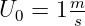 to the right,
a characteristic length 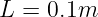, and kinematic viscosity  , yielding a
Reynolds number of 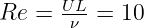. Note the upper plane (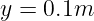) represents the
moving lid.
, yielding a
Reynolds number of 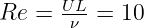. Note the upper plane (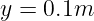) represents the
moving lid.
Please note that all output variables have been nondimensionalized to allow for easier
comparision. So we report pressure, and 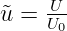, 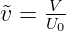.
Contour plots for the X and Y components of fluid velocity:


A streamline plot, and a glyph-based plot to show velocity direction:


A pressure and velocity profile sampled along the midline: 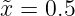, in component form.
Respectively,  , 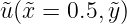, 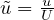.
, 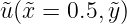, 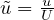.


We will demonstrate the increase in image fidelity due to finer discretization. The earlier midline velocity profiles: 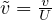, 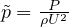 are successively halved in binwidth (grid size) in all directions: x, y, and t, for comparision.


–conclusion here–
Thank you so much for reading this work!